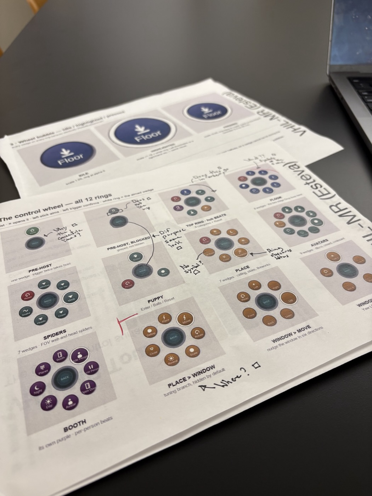
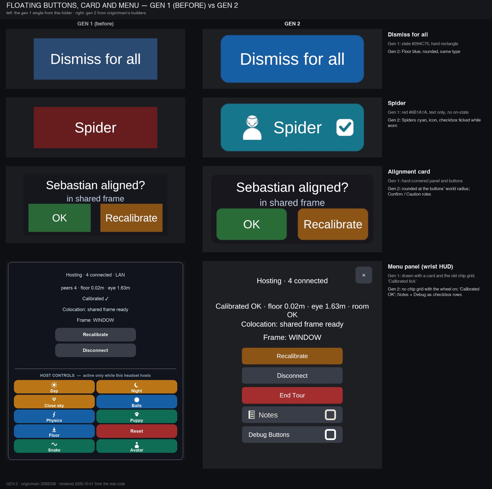
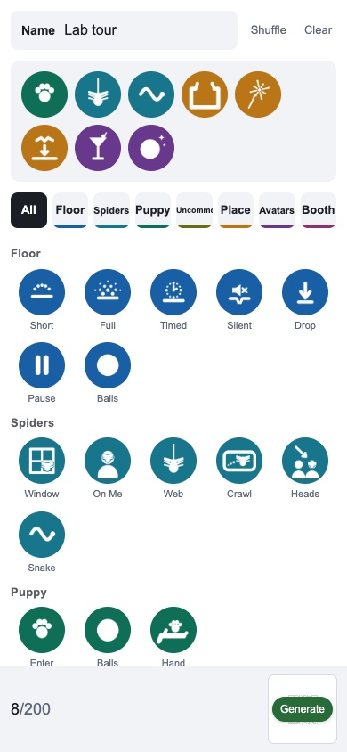
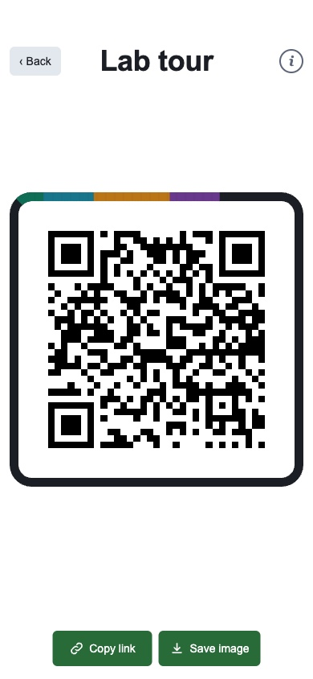
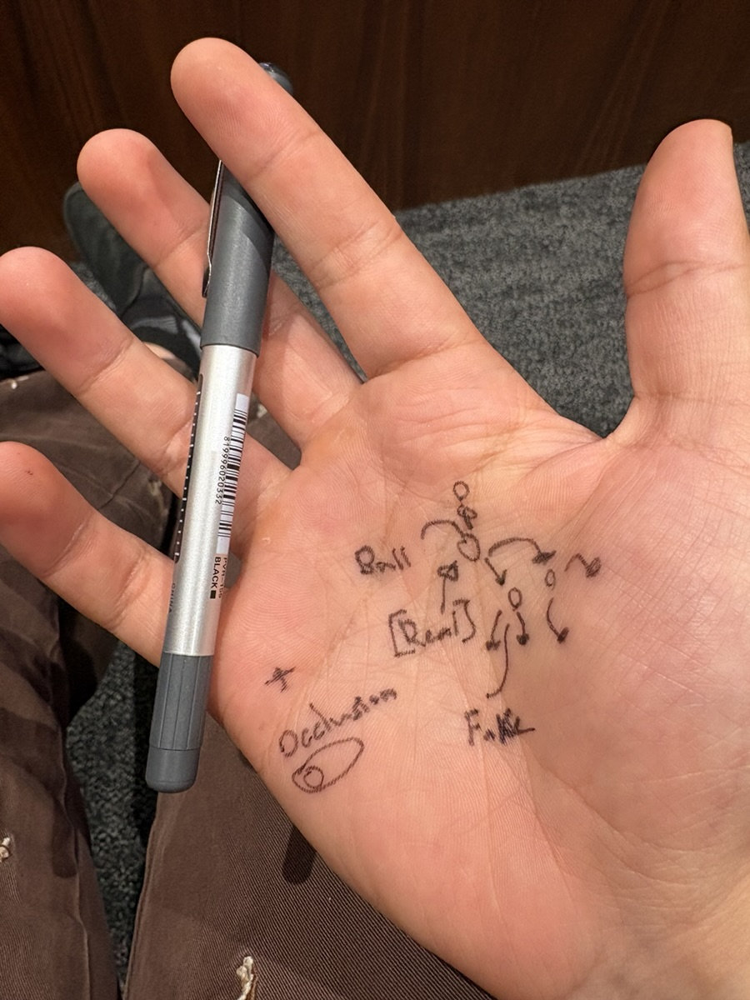

Reality
Becomes
Virtual
Ongoing
By Sebastian Esteva, Noé Chicas-Aranda, Dina Kim Hashash
Built on a foundation by Emmanuel Corona and Noé Chicas-Aranda, advised by Prof. Jeremy Bailenson, with support from the VHIL team. A mixed-reality tour for up to six headsets in one room.
01Reliable
As close to one button as possible.
-
One click
Host, sound and build start together.
-
Auto end
Tours end themselves. No headset left running.
-
Live logs
Every headset streams to the host. No cable.
02Designed
One icon per action. Colour by meaning. No silent actions.
-

Print
Every state, on paper, marked up.
-

Redesign
Before, after.
-


Experience path
Plan the tour on a phone. The host headset scans it, then Next runs it.
03New
Chorus: headsets see better together.
-

Sketch
Where it started.
-
Ball Beta
Tracked from every angle.
-
Room objects Beta
The furniture, mapped together.
Dance troupe Beta
RBV Camera
An iPad window into the tour, so guests can watch and take a photo home.
On: real people hide virtual things.
Off: the puppy floats in front of everyone.
Built with Claude Code, for fast iteration.